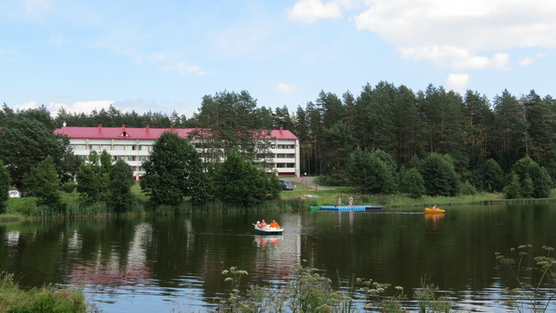

О санатории
О санатории
Санаторий «Рудня» филиала Открытого акционерного общества "Минский тракторный завод" «Медицинский центр МТЗ» является санаторно-курортной организацией второй категории. Свой статус здравница получила в марте 2011 года, а началась ее история с 80-х годов прошлого века, когда в живописном лесном массиве, в Логойском районе, на берегу речки Слижанка, был построен дом отдыха «Рудня» для работников минского тракторного завода и членов их семей.
Первых отдыхающих три корпуса дома отдыха приняли в августе 1985 года. В 1995 году у нас появился четвертый спальный корпус, где в 1998 году было создано лечебное отделение, и дом отдыха стал пансионатом с лечением. Сначала ему была присвоена 3-я категория, а в 2003 году – 2-я.
Сегодня наша здравница обеспечивает полноценный отдых и оздоровление с использованием природных факторов и лечебно-реабилитационных процедур. В санатории есть источник сульфатно-хлоридно-натриевой природной минеральной воды, которая также широко применяется для оздоровления и лечения отдыхающих.
Санаторий работает круглый год. Одновременно он может принять 250 человек, а его лечебная база рассчитана на 150 койко-мест.
Хорошему отдыху способствует и прекрасная природа - ведь Логойщину не зря называют белорусской Щвейцарией. Отдыхающих здесь ждут красивые природные ландшафты - холмы, покрытые хвойными и смешанными лесами, изобилующие в сезон грибами и ягодами, чистый лесной воздух и живописный водоем, который образует у санатория чистейшая лесная речка Слижанка. На водоеме в летний период оборудуется причал с катамаранами и лодками, а любители рыбной ловли практически круглый год занимаются рыбалкой.
Санаторий "Рудня" находится вдали от крупных населенных пунктов и автомагистралей. Территория вокруг санатория является санитарной зоной, контролируемой санитарной и экологической службами. Здесь значительно ограничена или запрещена какая-либо хозяйственная деятельность. Радиационный уровень в санаторной зоне и далеко за ее границами в пределах нормы. Площадь территории санатория «Рудня» - 12 га.
Питание
В санатории организовано 5-ти разовое питание. Со второго дня пребывания - заказное меню с соблюдением назначенной врачом диеты.В рамках заказного меню - еврозавтраки. Раз в неделю - дни белорусской кухни.
Питание в одну смену, по графику:
| Прием пищи | Время |
|---|---|
| Завтрак | 09:00 - 09:40 |
| Обед | 14:00 - 14:50 |
| Полдник | 16:30 - 17:00 |
| Ужин | 19:00 - 19:40 |
| Второй ужин | предоставляется к ужину |
Информация
Правила внутреннего распорядка- на отдых (без лечения)
- санаторно-курортные с лечением (не менее 7 дней)
- с лечебными программами (на срок 12-13 дней)
- путевки выходного дня на 2-ое суток (только при наличии свободных мест и 100% предоплате не позднее, чем за 3 суток до заезда)
Санаторий предлагает путевки:
- паспорт или документ, временно его заменяющий
- для детей - свидетельство о рождении
- путевка (если была приобретена заранее)
- квитанция об оплате
- туристическая путевка, или ваучер (при приобретении в турфирме)
- документ, дающий право на скидки, при наличии такого права согласно положению о скидках
- санаторно-курортная карта (для граждан РБ - выписка из медицинской карты) - обязательно, только если приобретается путевка с лечением!; Для желающих дополнительно, на платной основе пройти гирудотерапию, необходимо иметь на руках результаты коагулограммы: фибриноген, АЧТВ, МНО, протромбиновый индекс (ПТИ)
- документы, дающие право на освобождение от уплаты курортного сбора, при наличии такого права
Перечень документов при прибытии в санаторий: